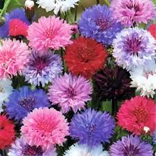

🌸 Identificação da Planta
Nome científico: Centaurea cyanus
Família botânica: Asteraceae
Nome popular: Centáurea Sortida
Origem: Europa
Tipo de planta: Ornamental
Ciclo de vida: Anual
Altura: 30 a 90 cm
Luminosidade: Sol pleno
🌿 Características
A Centáurea Sortida é uma flor ornamental conhecida por suas cores variadas e delicadas. Suas flores apresentam diferentes tonalidades, deixando os jardins mais coloridos e despertando a curiosidade dos estudantes.
Na Horta Escolar Viva, ela representa a beleza da diversidade das plantas e a importância da conservação da biodiversidade.
☀️ Como Cultivar
- ☀️ Prefere locais com bastante luminosidade ou sol pleno.
- 💧 Deve receber regas moderadas, evitando excesso de água.
- 🌱 Desenvolve-se melhor em solo fértil e bem drenado.
- 🌿 Pode ser cultivada em vasos, canteiros e jardins escolares.
🐝 Importância para a Biodiversidade
Suas flores atraem abelhas, borboletas e outros polinizadores, contribuindo para o equilíbrio ambiental.
Na escola, ajuda os estudantes a compreenderem as relações entre plantas, animais e o ambiente.
🌼 Você Sabia?
A Centáurea é uma flor muito apreciada nos jardins por suas cores variadas e por sua delicadeza.
Observar diferentes flores permite aos estudantes perceberem a riqueza da diversidade existente na natureza.
📱 Conheça mais sobre a Centáurea Sortida
Aponte a câmera do celular para o QR Code e descubra mais informações sobre esta planta.